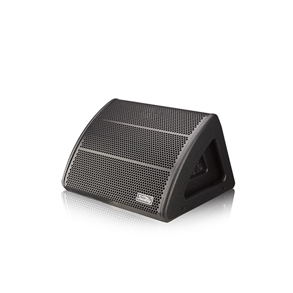
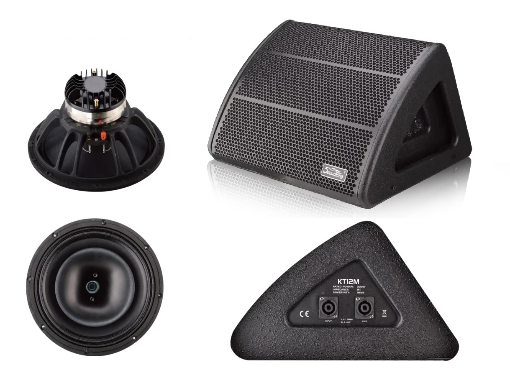

12인치 네오디뮴 동축 드라이버와 독창적인 웨지 형상으로 45°/20° 듀얼 모니터링 앵글을 제공하는 프로페셔널 스테이지 모니터. 1,200W 피크 파워와 127dB 최대 음압으로 대형 무대에서도 파워풀한 모니터링을 실현합니다.


네오디뮴 동축 드라이버 기술과 독창적인 웨지 디자인을 결합한 프로페셔널 스테이지 모니터. 45°와 20° 듀얼 모니터링 앵글로 다양한 무대 환경에 유연하게 대응합니다.
KT12M은 12인치 LF 유닛(75mm 보이스 코일)과 75mm 컴프레션 드라이버(1.5" 출구)를 동축으로 배치한 2웨이 패시브 스테이지 모니터입니다. 네오디뮴 마그넷 동축 구조로 포인트 소스 방사를 구현하며, 80°×80° 균일한 커버리지를 제공합니다.
독창적인 웨지 형상 캐비닛은 45°와 20° 두 가지 모니터링 앵글을 지원하여 연주자의 위치와 선호에 따라 유연하게 배치할 수 있습니다. 방수 도장 마감과 스틸 그릴로 투어링 환경에서의 내구성을 확보했습니다.
12인치 네오디뮴 LF 드라이버(75mm 보이스 코일)와 75mm 컴프레션 드라이버(1.5" 출구)를 동축으로 배치한 패시브 2웨이 스테이지 모니터. Ti/PK 컴파운드 다이어프램과 패시브 LC 크로스오버에 PTC 보호 회로를 탑재하여 안정적이고 파워풀한 모니터링 사운드를 전달합니다.
| 모델명 | KT12M |
| 타입 | 패시브 동축 2웨이 스테이지 모니터 |
| 주파수 응답 | 55Hz – 20kHz (±3dB) |
| 감도 (1m/1W) | 96dB |
| 정격 임피던스 | 8Ω |
| 출력 (RMS / Peak) | 300W / 1,200W |
| 최대 음압 (Max SPL) | 127dB |
| 크로스오버 주파수 | 1.2kHz |
| 커버리지 (H × V) | 80° × 80° |
| LF 드라이버 | 12" / 75mm 보이스 코일 / Nd 마그넷 |
| HF 드라이버 | 75mm 컴프레션 / 1.5" 출구 / Nd 마그넷 |
| 다이어프램 | Ti/PK 컴파운드 |
| 크로스오버 네트워크 | 패시브 LC / PTC 보호 회로 |
| 모니터링 앵글 | 45° / 20° |
| 연결 단자 | 4× Speakon |
| 캐비닛 크기 (W×H×D) | 468 × 430 × 442 mm |
| 무게 | 17.5 kg |
독창적인 웨지 형상 디자인으로 45°와 20° 두 가지 모니터링 앵글을 제공합니다. 무대 위 연주자의 위치와 환경에 따라 최적의 각도를 선택할 수 있습니다.
프로페셔널 스테이지 모니터링에 최적화된 동축 웨지 모니터입니다.